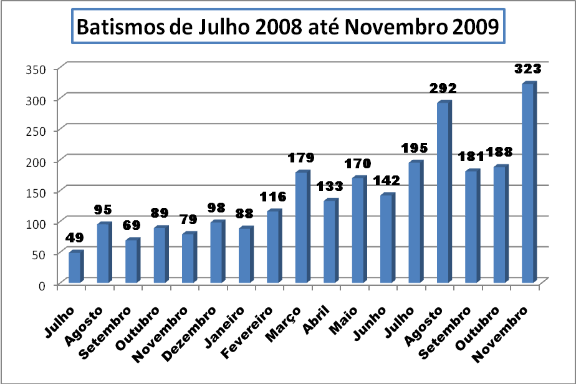
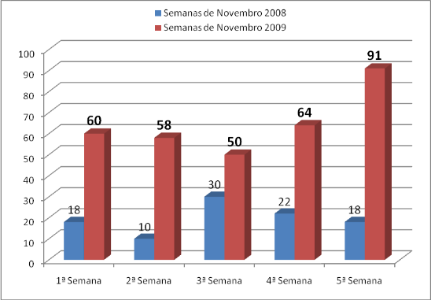

Rio de Janeiro 07 de dezembro de 2009
Estimados Missionários
Até que ponto estamos dispostos a fazer a vontade de Deus? Quais são os benefício de se fazer a vontade de Deus? Por que Deus nos pede sacrifício e obediência?
Gostaria de compartilhar com vocês os meus sentimentos a respeito dessas perguntas:
Por que desejei falar sobre esse assunto? Vejo missionários murmurando, reclamando, chorando por ter sido transferido para um lugar que não desejaria. Vejo outros preocupados com o seu bem-estar. Acredito que se comportam assim por não entenderem os desígnios de um Deus justo, misericordioso e verdadeiro. Vou usar as escrituras para ensinar esse princípio.
Até que ponto estamos disposto a fazer a vontade de Deus? A história nos revela que sempre existiu, existe e existirão pessoas que usando o seu arbítrio moral fizeram suas escolhas de maneira equivocadas, achando talvez que não acarretaria em nenhum prejuízo, ou simplesmente por rebeldia aberta para com Deus. Vejam o exemplo na família do profeta Lei. Minha intenção é provocar uma reflexão em suas mentes ao ponto de observarem que as más escolhas sempre desencadeiam conseqüências desastrosas. Muitas delas para o resto da vida. Por exemplo:
Lamã e Lemuel. “Ora, isto ele disse por causa da obstinação de Lamã e Lemuel; porque eis que murmuravam a respeito de muitas coisas contra seu pai, que ele era um visionário e os havia tirado da terra de Jerusalém, fazendo-os deixar a terra de sua herança e seu ouro e sua prata e suas coisas preciosas, para morrerem no deserto. E diziam que ele havia feito isso por causa das loucas fantasias de seu coração.(1 Néfi 2:11). Quando murmuramos perdemos o Espírito e passamos a fazer coisas piores e piores. É como se fosse uma bola de neve do mal. Vai crescendo, crescendo ao ponto de não mais raciocinar, os sentimentos são confusos e diante desse quadro perdemos o bom senso e até mesmo a luz de Cristo e não conseguimos enxergar uma partícula de sequer do que é bom do que é luz. Agindo nessa crescente onda de sentimentos maus, passando de um nível de ações aparentemente inofensivas para outro nível mais agressivo ao ponto de querer tirar a vida do próprio pai.Vejam: “E Lamã disse a Lemuel e também aos filhos de Ismael: Matemos nosso pai e também nosso irmão Néfi, que se arvorou em nosso chefe e mestre, apesar de sermos seus irmãos mais velhos”.
(1 Néfi 16:37). Perceberam? Antes era só murmuradores e depois assassinos.
Não vou entrar no mérito dos motivos pelos quais agiam assim. Mas quero ressaltar os efeitos das conseqüências por agir com esse espírito. Vejam as conseqüências:” E Lamã e Lemuel não comeram do fruto, disse meu pai”.(1 Néfi 8:35).
Existiam dois caminhos. Lamã e Lemuel escolheram o caminho que não tem retorno. Mas não esqueça que eles primeiro escolheram murmurar, reclamar, ter atos de rebeldia e depois assassinar o próprio pai. Tudo começa com pequenos atos, algumas palavras e uma atitude desobediente para depois perder o equilíbrio das ações e herdar o amargo das conseqüências. Sempre existirão dois caminhos. Qual caminho você está trilhando na missão?
“E aconteceu que eu, Néfi, disse a meu pai: Eu irei e cumprirei as ordens do Senhor, porque sei que o Senhor nunca dá ordens aos filhos dos homens sem antes preparar um caminho pelo qual suas ordens possam ser cumpridas.(1 Néfi 3:7).
Todos estavam na mesma família. Receberam os mesmos ensinamentos. Todos estavam no mesmo deserto. Todos estavam no mesmo barco, mas as atitudes eram bem diferentes para com as ordens de Deus. Vimos anteriormente o triste fim daqueles que murmuram, reclamam e se perdem pelo Caminho devido a atitudes rebeldes. Agora vejam o que acontece com os que embora sofrendo perseguições e todo o tipo de sofrimento. “E permanecemos no deserto pelo espaço de muitos anos, sim, oito anos no deserto. E chegamos à terra a que demos o nome de Abundância, por causa das muitas frutas e também do mel silvestre; e todas essas coisas foram preparadas pelo Senhor, a fim de que não perecêssemos. E vimos o mar, ao qual demos o nome de Irreântum, que significa muitas águas.E aconteceu que armamos nossas tendas perto da costa e, apesar de havermos sofrido muitas aflições e dificuldades, sim, tantas que não podemos escrevê-las todas, ficamos imensamente contentes quando chegamos à costa; e demos ao lugar o nome de Abundância, devido a suas muitas frutas.E aconteceu que depois de estar eu, Néfi, pelo espaço de muitos dias na terra de Abundância, ouvi a voz do Senhor, dizendo: Levanta-te e vai à montanha. E aconteceu que me levantei e subi à montanha e clamei ao Senhor!.( 1 Néfi 17:4 - 7). Depois das aflições chegaram em abundância. Frutas, mel etc. Deus chama Néfi e diz: “Tu construirás um navio”. Bênçãos, provações, bênçãos novamente e depois provações. Já percebera que é assim que acontece? Se não murmurais, claro. “E então, se as suportares bem, Deus te exaltará no alto; triunfarás sobre todos os teus inimigos.(D&C 121:8).
Vejamos agora algumas experiências e bênçãos que Néfi recebeu:
E aconteceu que vi os céus se abrirem;
(O Livro de Mórmon | 1 Néfi 11:14)
E eu olhei e tornei a ver a virgem carregando uma criança nos braços.
(O Livro de Mórmon | 1 Néfi 11:20)
E olhando, vi o Filho de Deus caminhando entre os filhos dos homens;
(O Livro de Mórmon | 1 Néfi 11:24)
E eu olhei e vi o Redentor do mundo, de quem meu pai falara; e vi também o profeta que prepararia o caminho diante dele.
(O Livro de Mórmon | 1 Néfi 11:27)
E também vi doze outros seguindo-o.
(O Livro de Mórmon | 1 Néfi 11:29)
E olhei e vi o Cordeiro de Deus caminhando entre os filhos dos homens
(O Livro de Mórmon | 1 Néfi 11:31)
E olhei e vi o Cordeiro de Deus ser levado pelo povo; sim, o Filho do Deus Eterno foi julgado pelo mundo; e vi e testifico.
(O Livro de Mórmon | 1 Néfi 11:32)
E vi os céus abrirem-se e o Cordeiro de Deus descendo do céu; e desceu e mostrou-se a eles.
Quando Lei ordenou a Néfi que fosse pegar as placas falou algo que teria um efeito para o resto de sua vida. Néfi por ser um jovem inteligente, pegou aquela frase e certamente aplicou em toda sua vida: “Vai, portanto, meu filho, e serás abençoado pelo Senhor, porque não murmuraste.(1 Néfi 3:6). Perceberam? Néfi sabia que se ele não murmurasse sob qualquer condição, Deus o abençoaria. Afinal essas palavras saíram da boca de um profeta de Deus e Néfi sabia disso. É tanto que na viagem vários murmuraram, menos Néfi. Percebe? E aconteceu que meu pai ouviu a voz do Senhor; e ele foi realmente repreendido por ter murmurado contra o Senhor, de tal forma que mergulhou em profundo pesar.(1 Néfi 16:25). Mas Néfi se mantinha firme apesar dos grandes sofrimentos. Vejam a dignidade de Néfi: E aconteceu que Lamã e Lemuel e os filhos de Ismael começaram a murmurar muito por causa de seus sofrimentos e aflições no deserto; e meu pai também começou a murmurar contra o Senhor seu Deus; sim, e estavam todos extremamente aflitos, a ponto de murmurarem contra o Senhor.
21 Ora, aconteceu que eu, Néfi, fiquei aflito, juntamente com meus irmãos, pela perda de meu arco; e tendo os seus arcos perdido a elasticidade, as coisas tornaram-se muito difíceis, sim, tanto que não podíamos conseguir alimento.(1 Néfi 16:20 - 21). Embora aflito, não murmurou contra Deus.
Deus mandou Néfi ir para o deserto.
E aconteceu que o Senhor ordenou a meu pai, num sonho, que partisse com a família para o deserto.(1 Néfi 2:2). Néfi tinha como mentor(mestre) o sei pai Lei.
E aconteceu que ele foi obediente à palavra do Senhor; fez, portanto, o que o Senhor lhe ordenara.(1 Néfi 2:3). Ele aprendeu desde cedo a ouvir a voz dos profetas.
Por fim. Por que Deus nos pede sacrifício e obediência?
“E assim os provaremos para ver se farão todas as coisas que o Senhor seu Deus lhes ordenar; E os que guardarem seu primeiro estado receberão um acréscimo; e os que não guardarem seu primeiro estado não terão glória no mesmo reino que aqueles que guardarem seu primeiro estado; e os que guardarem seu segundo estado terão um acréscimo de glória sobre sua cabeça para todo o sempre.(Abraão 3:25 - 26).
Eu, o Senhor, estou obrigado quando fazeis o que eu digo; mas quando não o fazeis, não tendes promessa alguma.(D&C 82:10).
Oferecerás um sacrifício ao Senhor teu Deus em retidão, sim, um coração quebrantado e um espírito contrito.(D&C 59:8).
Eis que o Senhor requer o coração e uma mente solícita; e os que são solícitos e obedientes comerão do bem da terra de Sião nestes últimos dias.(D&C 64:34).
Estamos vivendo essa história em nossa missão. Deus tem nos pedido alhumas coisas e nós temos obedecido sem murmurar. Por exemplo:
Deixamos de assistir filmes
Ir ao shopping
Deixamos as bebidas a base de cola
Deixamos de ouvir as músicas do mundo
Diminuímos os passeios nos pontos turísticos
Elevamos o nosso nível de pureza, compromisso e sacrifico
Lemos o livro de mórmon em trinta dias
Jejuamos mais
Nossas orações se tornaram mais significativas
Trabalhamos semanalmente para batizar
Vejamos agora o resultado:


Continuemos sendo obedientes e sacrificando a Deus, e grandes milagres ainda estão por vir.
Poderia escrever muito sobre esse assunto. Mas basta por hoje.
Amamos vocês
Presidente e Sister Bezerra
Missão Brasil Rio de Janeiro